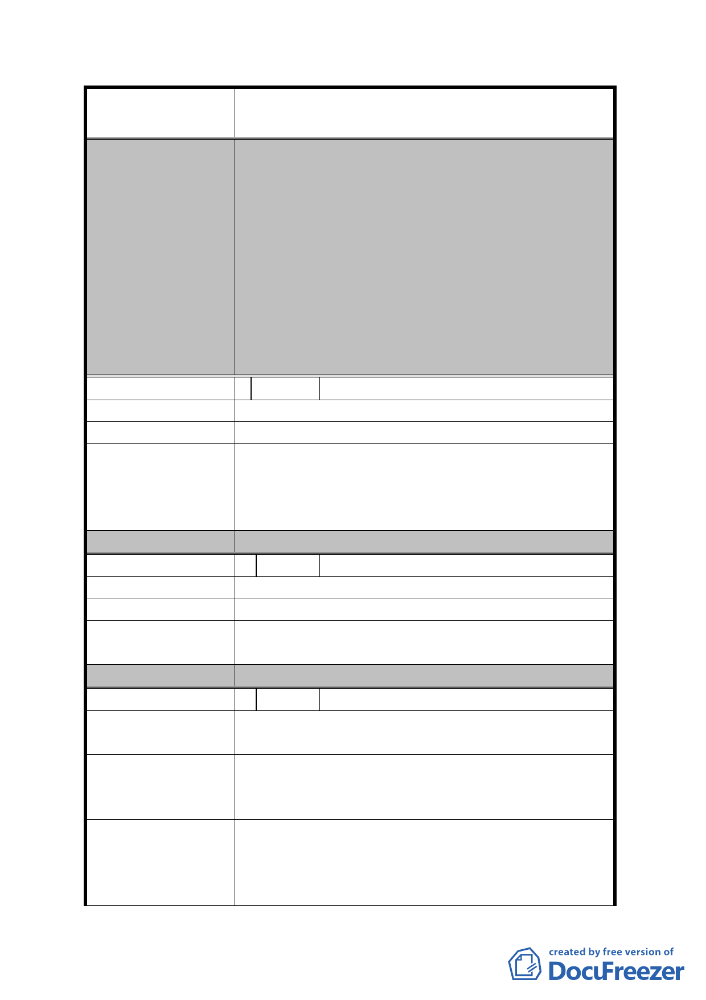

案名
變更臺北市內湖區蘆洲里附近部分工業區為
保護區、住宅區及道路用地主要計畫案
一、 同編號 3 委員會決議二。
二、 有關使用強度、使用項目、都市設計審議、
公共開放空間等依原公展有關內容通過。
三、 本案訂定開發時程獎勵，「重劃區範圍土地於
重劃完成之日起 2 年內開發者，給予 10%基
委員會決議
準容積獎勵。惟須於重劃完成之日起 3 年內
取得建造執照，否則本時程獎勵予以取消」
及劃定都市更新地區，以促進本地區早日開
發。
四、 地價稅繳退事宜，非本會審議事項，請市府
參考。
編 號 6 陳情人 徐浩翔
陳 情 理 由 增進大眾運輸便利性，解決大眾運輸停車場地問題。
建 議 辦 法 於區域內規劃公車停車場。
査目前區內部分土地(非屬重劃區)已有私人申請作
發展局回應意見
公車調度場站使用，且劃設公車停車場將加重重劃區
內之公共設施共同負擔比率，致本地區辦理重劃開發
之可行性降低。
委員會決議
採納發展局意見。
編 號 7 陳情人 高松本
陳 情 理 由 容積率不夠。
建 議 辦 法。
發
展
局
回
應
意
見
有關建議提高容積率
將納供參考。
1
節，因屬細部計畫內容，本局
委員會決議
同編號 5 決議二、三項。
編 號 8 陳情人 劉文豐
陳
情
理
由
1.15 米道路是否須用。
2.重劃之外，有無他法。
1. 已經有安康、潭美、永保等道路，第 4 條道路多
建 議 辦 法 餘。
2. 改變工業區為商業區即可促進繁榮。
一、 考量重劃 A 區及 B 區之街廓過大，造成部分
發展局回應意見
裡地無面臨道路無法開發以及目前區內道路
寬度不足等課題，故規劃新闢 15 米東西向計
畫道路橫貫該區，以負荷該地區未來開發衍
- 18 -